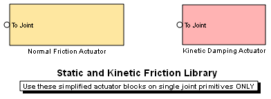

Static and Kinetic Friction Library
This demo library contains blocks that allow you to actuate a single joint primitive at a time with these types of friction:
- A mix of static and kinetic contact friction, proportional to static and kinetic friction coefficients and the force normal to the contact surface
- Kinetic damping friction proportional to joint primitive velocity, either translational or rotational, but with opposite sign
These demo library blocks are masked subsystems containing SimMechanics and Simulink blocks.
The mixed static-kinetic friction block makes use of the Joint Stiction Actuator block from the SimMechanics Sensors & Actuators Library. If the connected joint primitive locks, that degree of freedom (DoF) is removed from the system. SimMechanics tests for locking and unlocking conditions with algebraic loops (non-time-based simulation steps) that can decrease the accuracy of your simulation, particularly if you use a fixed-step solver. Use such Joint Stiction Actuator blocks only if you need to lock and unlock jonits.
The kinetic damping friction block is a force element that applies a continuous friction force or torque via joint actuation using joint motion measured by a joint sensor.
